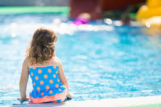

* Drowning is the 3rd leading cause of death.
* Around 360000 annual drowning deaths worldwide.
* Of the 3,709 drownings in 2017, more than 12% were children age 4 and younger.
What is Drowning?Drowing is a respiratory impairment as a result of being in or under a liquid. It typically occurs silently, with only a few people able to wave their hands or call for help. Drowning accidents can be prevented with precautions like if you don't know how to swim well, find someone to teach you, learn to float and swim, if you are tired; rest and stay out of the water. Never use alcohol or drugs while you're swimming, diving or in a boat, and learn what to do for a water rescue or when someone stops breathing.
Caused by four or more ounces of water in the lungs. The water in the lungs prevents oxygen from getting to the bloodstream and eventually the heart stops.
Symptoms include:* Someone who has spent too much time underwater
* Victim may be quietly bobbing up and down at the surface of the water.
* Victim may be lying still on the bottom.
Loss of Consciousness occurs in:- Three minutes or less
What to do?- Call 911
- Initiate CPR, if known
Is when someone takes in a small amount of water through his or her nose and/or mouth, and it causes a spasm in the airway; causing it to close up. The prevention of air getting to the lungs results in lack of oxygen in the bloodstream, which will eventually cause the heart to stop.
Symptoms:* Someone who has spent too much time underwater
* Victim may be lying still on the bottom.
* Coughing/Chest pain
* Difficulty breathing or speaking
Loss of Consciousness:- Three minutes or less
Response:- Initiate CPR / Call 911
Caused by less than four ounces of water in the lungs. The body reacts to this small amount of water in the lungs by creating even more fluids in the lungs, which prevents oxygen from getting to the bloodstream and eventually causes the heart stops.
Symptoms:* Immediate coughing and shortness of breath
* Confused speech or behavior
* Loss of bowels and urine control
* Sleepiness/Tiredness
Loss of Consciousness:- Can be delayed for up to 72 hours.
Response:- Immediately transport victim (or suspected victim) to the nearest emergency room.